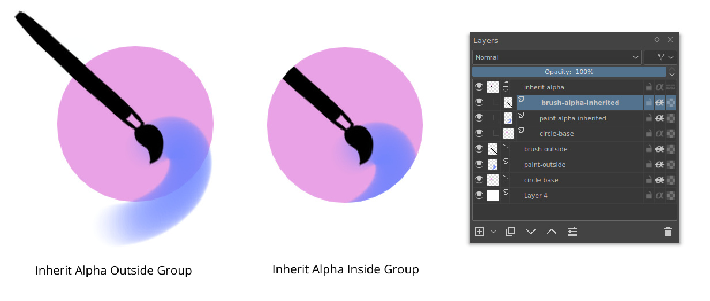
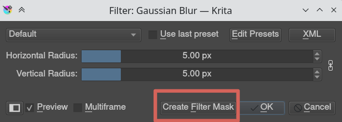

圖層及遮罩的入門¶
Krita supports layers which help to better control parts and elements of your painting.
Think of an artwork or collage made with various stacks of papers with some papers cut such that they show the paper beneath them while some hide what's beneath them. If you want to replace an element in the artwork, you replace that piece of paper instead of drawing the entire thing. In Krita instead of papers we use Layers. Layers are part of the document which may or may not be transparent, they may be smaller or bigger than the document itself, they can arrange one above other, named and grouped.
Layers can give better control over your artwork for example you can re-color an entire artwork just by working on the separate color layer and thereby not destroying the line art which will reside above this color layer.
You can edit individual layers, you can even add special effects to them, like Layer styles, blending modes, transparency, filters and transforms. Krita takes all these layers in its layer stack, including the special effects and combines or composites together a final image. This is just one of the many digital image manipulation tricks that Krita has up its sleeve!
Usually, when you put one paint layer on top of another, the upper paint layer will be fully visible, while the layer behind it will either be obscured, occluded or only partially visible.
管理圖層¶
Some artists draw with limited number of layers, but some prefer to have different elements of the artwork on separate layer. Krita has some good layer management features which make the layer management task easy.
You can group layers and organize the elements of your artwork.
The layer order can be changed or layers can be moved in and out of a group in the layer stack by simply holding them and dragging and dropping. Layers can also be copied across documents while in the subwindow mode, by dragging and dropping from one document to another.
These features save time and also help artists in maintaining the file with a layer stack which will be easy to understand for others who work on the same file. In addition to these layers and groups can both be labeled and filtered by colors, thus helping the artists to visually differentiate them.
To assign a color label to your layer or layer group you have to  on the layer and choose one of the given colors from the context menu. To remove an already existing color label you can click on the 'x' marked box in the context menu.
on the layer and choose one of the given colors from the context menu. To remove an already existing color label you can click on the 'x' marked box in the context menu.

Once you assign color labels to your layers, you can then filter layers having similar color label by clicking on one or more colors in the list from the drop-down situated in the top-right corner of the layer docker.

在 5.0 版本新加入: You can also use this dropdown to filter the layers by layer name.
圖層類型¶

The image above shows the various types of layers in 圖層. Each layer type has a different purpose for example all the vector elements can be only placed on a vector layer and similarly normal raster elements are mostly on the paint layer, 圖層及遮罩 page contains more information about these types layers.
Now Let us see how these layers are composited in Krita.
Krita 內圖層是如何合成？¶
In Krita, the visible layers form a composite image which is shown on the canvas. The order in which Krita composites the layers is from bottom to top, much like the stack of papers we discussed above. As we continue adding layers, the image we see changes, according to the properties of the newly added layers on top.
Group Layers composite separately from the other layers in the stack, except when pass through mode is activated. The layers inside a group form a composite image first and then this composite is taken into consideration while the layer stack is composited to form a whole image. If the pass through mode is activated by pressing the icon similar to bricked wall, the layers within the group are considered as if they are outside that particular group in the layer stack, however, the visibility of the layers in a group depends on the visibility of the group.


The groups in a PSD file saved from Photoshop have pass-through mode on by default unless they are specifically set with other blending modes.
繼承透明度（或作剪裁遮色片）¶
There is a clipping feature in Krita called inherit alpha. It is denoted by an alpha icon in the layer stack.

It can be somewhat hard to figure out how the inherit alpha feature works in Krita for the first time. Once you click on the inherit alpha icon on the layer stack, the pixels of the layer you are painting on are confined to the combined pixel area of all the layers below it. That means if you have the default white background layer as first layer, clicking on the inherit alpha icon and painting on any layer above will seem to have no effect as the entire canvas is filled with white. Hence, it is advised to put the base layer that you want the pixels to clip in a group layer. As mentioned above, group layers are composited separately, hence the layer which is the lowest layer in a group becomes the bounding layer and the content of the layers above this layer clips to it if inherit alpha is enabled.

You can also enable alpha inheritance to a group layer.
遮罩與濾鏡¶
Krita supports non-destructive editing of the content of the layer. Non-destructive editing means editing or changing a layer or image without actually changing the original source image permanently, the changes are just added as filters or masks over the original image while keeping it intact, this helps a lot when your workflow requires constant back and forth. You can go back to original image with a click of a button. Just hide the filter or mask you have your initial image.
You can add various filters to a layer with Filter mask, or add Filter layer which will affect the whole image. Layers can also be transformed non-destructively with the transformation masks, and even have portions temporarily hidden with a Transparent Mask. Non-destructive effects like these are very useful when you change your mind later, or need to make a set of variations of a given image.
備註
You can merge all visible layers by selecting everything first . Then Combine them all by merging .
These filters and masks are accessible through the right-click menu (as shown in the image below) and the Plus icon on the layer docker.

You can also add a filter as a mask from filter dialog itself, by clicking on the Create Filter Mask button.
All the filters and masks can also be applied over a group too, thus making it easy to non-destructively edit multiple layers at once. In the category Layers and masks you can read more about the individual types of layers and masks.
Layer Docker has more information about the shortcuts and other layer management workflows.